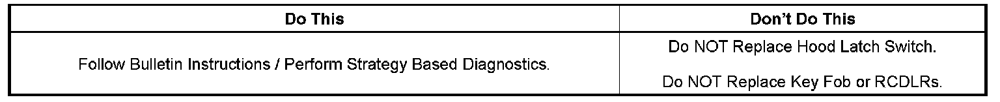

Remote Starting System - System Inoperative Diagnostics
INFORMATIONBulletin No.: 08-08-52-002
Date: February 27, 2008
Subject:
Diagnostic Information for Inoperative Remote Vehicle Start
Models:
2005-2008 GM Passenger Cars and Light Duty Trucks (including Saturn)
2005-2008 HUMMER H2
with Remote Keyless Entry RPOs AP3 or AP8

Remote Vehicle Start (RVS) Inoperative Diagnostic Concerns
Information on Hood Latch Switches
One of the many components involved in the Remote Vehicle Starting System is the Hood Latch Switch. The state of this switch is checked by the BCM during a remote vehicle start request and the component must function properly in order for the vehicle to commence a remote start event. During the infancy of this option (RPO AP3/AP8) parts return analysis showed a significantly shorter than expected component life for the Hood Latch Switch shared across many different GM vehicles.
The switches currently being factory installed, and sent as service replacement parts, are vastly improved in design and suitably robust. Most hood latch switches currently returned under warranty are analyzed and determined to have no trouble found (NTF). It is understandable and desirable that technicians gain familiarity with the vehicles they service on a daily basis, however it is required that technicians follow Strategy Based Diagnostics before replacing this switch.
Important:
The ONLY way to repair or replace a hood latch switch is to replace the LATCH ASSEMBLY. The switch CANNOT be serviced separately from the latch and is NOT AVAILABLE from GMSPO. Any effort to remove the switch from the latch will permanently damage the switch and void the warranty coverage of that part.
Important:
The hood switch provides status of the hood to the BCM for RVS purposes. The switch is integrated into the hood latch assembly. The hood ajar switch provides two separate inputs to the BCM. These separate inputs allow the BCM to actively monitor for a hood ajar switch fault.
RVS System Operation
The remote vehicle start (RVS) function allows engine starting while not in the vehicle. It also allows the vehicle HVAC system and other vehicle systems to enable providing a comfortable vehicle upon entry. RVS functions have an operating range of up to 59 m (195 ft) depending on conditions. The RVS sequence begins by pressing and releasing the lock button and then pressing and holding the RVS buttons on the keyless entry transmitter. The turn signal lamps will illuminate to indicate the vehicle has received the remote start request. Each time an RVS is performed the vehicle doors are locked; however they may then be unlocked/locked with the transmitter or vehicle key at any time. Once activated the engine is allowed to run for 10 minutes. The RVS time may be extended by an additional 10 minutes by again pressing and releasing the lock button and then pressing and holding the RVS buttons on the transmitter. This feature is called an RVS continue and allows a maximum of 20 minutes of engine running. If the RVS continue is performed at 7 minutes into the initial 10 minute time-out a total of 17 minutes of engine running would occur. The RVS event may be suspended at any time by pressing only the RVS button on the transmitter or by entering the vehicle and turning ON the hazard lamps.
RVS System Description
Remote vehicle start (RVS) begins as a Radio Frequency (RF) message received by the remote control door lock receiver (RCDLR) from a keyless entry transmitter. The RVS request is sent by the RCDLR to the body control module (BCM) via serial data line. The BCM monitors system conditions such as content theft deterrent (CTD) closures ajar status and body DTCs to determine if an RVS event will occur. If conditions are determined to be acceptable the RVS message is sent to the engine control module (ECM). The ECM monitors system conditions such as engine control parameters and vehicle theft deterrent (VTD) to determine if engine starting will be allowed. If conditions are acceptable the ECM will initiate engine starting. During the engine run time in an RVS attempt before the operator enters the vehicle the ECM may discontinue engine operation if system conditions require it or a message is received from the BCM requesting the engine be turned OFF.
Reasons an RVS event will NOT Happen
The RVS System WILL NOT operate if any of the following conditions are present:
^ A current vehicle DTC that illuminates the malfunction indicator lamp (MIL) is set - obtain vehicle DTCs.
^ Keyless Entry Transmitter is not Operational.
^ The vehicle is in Valet Mode.
^ RVS is Disabled through Vehicle Personalization.
^ More than 2 Remote Starts have been attempted.
^ The HAZARD switch is in the ON position.
^ A current HAZARD switch DTC is set.
^ A current HOOD AJAR DTC is set.
^ Rear compartment lid is ajar.
^ Any Door is not locked.
^ The Content Theft Deterrent (CTD) system detects an alarm trigger.
^ Engine RPM greater than 0 Detected.
^ Excessive Coolant TEMP is registered.
^ Accelerator pedal position greater than 0 percent.
^ Vehicle is not in PARK.
^ A current Vehicle Theft Deterrent Malfunction DTC.
^ A current Automatic Transmission Shift Lock Control System DTC is set.
^ A vehicle speed sensor signal is detected by the ECM.
^ Vehicle power mode is incorrect.
Diagnostic Information Starting Point
For additional assistance refer to Remote Vehicle Start Inoperative in the Electronic Service Information. This section will guide you through the complete Strategy Based Diagnostics and provide Specific Diagnostic Procedure Instructions.
Warranty Information
Please refer to the published Labor Time Guides and claim the corresponding labor operation for the component(s) replaced.

Disclaimer